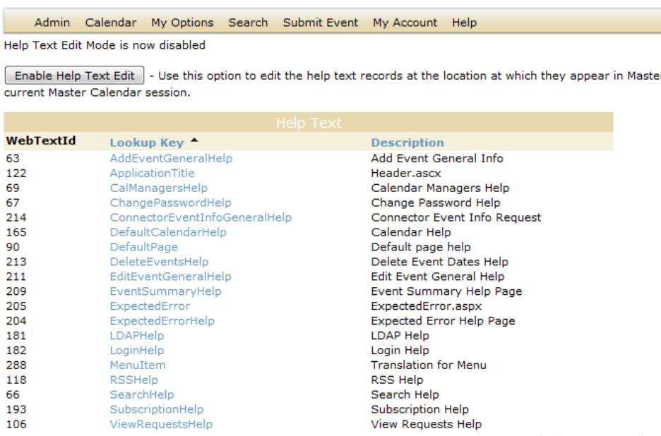
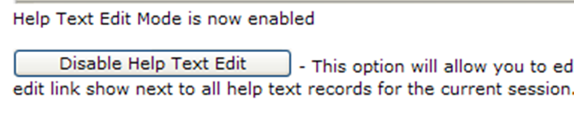
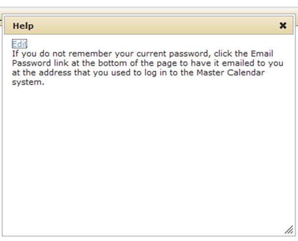
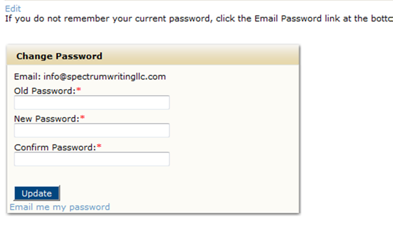

As the Master Calendar site administrator, you can customize messages in key areas of your system that provides organization-specific information or hints to your users about how to use Master Calendar. For example, you might want to place help text above a calendar that explains what type of events that a user should and should not post to the calendar. (The location of the Help Text in Master Calendar is determined by the default page layout. See Setting the Default Page Layout. You have two options for managing help text in Master Calendar—from the Help Text function on the Admin menu, or by clicking an Edit link next to the help text on a page.
1. On the Admin menu, point to Site Administration, and then click Help Text. The Help Text page opens. By default, when the page first opens, Help Text Edit mode is disabled.
2. Click the Lookup Key link for the help text to open the page for editing the help text. A page opens for editing the help text in the selected area of Master Calendar that has the following characteristics:
• The option Collapse Help Text is selected. If this option is selected, the help text for a page is collapsed behind a Help icon on the page. A user must click this icon to display the help text.
• If you have configured cultures for Master Calendar, then these cultures are displayed in a Culture dropdown list.

3. Optionally, do one or both of the following:
• Clear Collapse Help Text. (If you clear this option, then the help text is displayed explicitly on the pages in Master Calendar.)
• Select a different culture (language) in which the help text is to be displayed. The guest’s or user’s browser language must be set to the appropriate culture (language) to display these translations.
4. Enter the help text in the blank Design tab. Use the available formatting options to select the font size, style, color, and so on.
5. Optionally, do one or both of the following:
• Click Preview to open the Preview tab and view the Help text as it will be displayed in your Master Calender system.
• Click HTML to open the HTML tab and view the HTML code for the help text.
6. Click Save.
7. Toggle Enable Help Text. The message “Help Text Mode is now enabled” is displayed above the toggle, and the toggle now reads “Disable Help Text Edit.”

An Edit link is displayed next to all the Help Text records for the current Master Calendar session. You can click this Edit link to open the page for editing the help text at the location at which it is displayed in Master Calendar (see below).
8. To disable Help Text mode, toggle Disable Help Text Edit. The message “Help Text Mode is now disabled” is displayed above the toggle, and the toggle now reads “Enable Help Text Edit.”

Edit link for help text explicitly displayed on a Master Calendar page

Page tags: article:topic